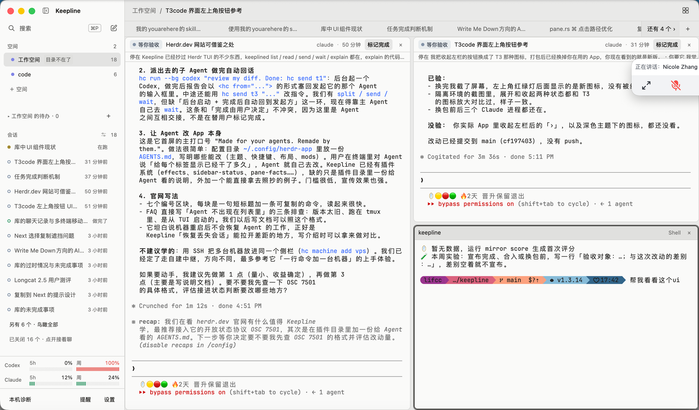

为什么还丑：不是标签的形状，是灰色叠灰色、框套框
上一版 3 个方向只换了标签画法，所以看着还是差不多。对照 T3 Code 截图，真正的差别在底色和框：T3 的正文是一整块白，顶栏不另起灰带，内容之间靠留白而不是边框分开。我们现在正文是灰底，上面再放白色圆角卡片，卡片里又有灰色状态条、彩色底的标签，一屏大约 20 条分割线。下面上图是你的真截图，下图是同比例的改法（终端字号也按截图对齐；终端内容我删短了，空白多一些不代表改法本身更空）。
现在（你的截图）

改后：正文全白、标签并进顶栏、窗格不再是卡片
工作空间
+3
需要你 2
鸟瞰
库中 UI 组件现状
同类工具官网可借鉴
T3code 左上角按钮参考
任务完成判断机制
Write Me Down 方向
pane.rs ⌘ 点击路径优化
我的 youarehere 的 skill
复制到 Next 的提示设计
等你验收同类工具官网可借鉴之处标记完成×
2. 派出去的子 Agent 做完自动回话
hc run --bg codex "review my diff. Done: hc send t1"：后台起一个 Codex，做完后报告会以 <hc from="..."> 的形式塞回发起它的那个 Agent 的输入框里。中途还能用 hc send t3 "..." 改指令。3. 让 Agent 改 App 本身
这是它首屏的主打口号 "Made for your agents. Remade by them."。做法很简单：配置目录 ~/.config/<app> 里放一份 AGENTS.md，写明哪些能改（主题、快捷键、布局、mods）……4. 官网写法
- 七个编号区块，每块是一句短标题加一条可复制的命令- FAQ 直接写「Agent 不出现在列表里」的三条排查
✻ Crunched for 1m 12s · done 4:51 PM
等你验收T3code 界面左上角按钮参考标记完成×
已验：
- 换完我截了屏幕，左上角红绿灯后面显示的是新图标
- 隔离环境的截图里，展开和收起两种状态都和 T3 的图标放大对比过
- 换包前后三个 Claude 进程都还在。
没验：你实际 App 里收起左栏后的「›」，以及深色主题下的图标。
改动已经提交到 main (cf197403)，没有 push。
- 换完我截了屏幕，左上角红绿灯后面显示的是新图标
- 隔离环境的截图里，展开和收起两种状态都和 T3 的图标放大对比过
- 换包前后三个 Claude 进程都还在。
没验：你实际 App 里收起左栏后的「›」，以及深色主题下的图标。
改动已经提交到 main (cf197403)，没有 push。
✻ Cogitated for 3m 36s · done 5:11 PM
keepline×
暂无数据，运行 mirror score 生成首次评分
lifcc …/keepline main v1.3.14 帮我看看这个ui
lifcc …/keepline main v1.3.14 帮我看看这个ui
1 · 正文改白底
正文区现在是灰底 + 白卡片。改成整块白，窗格之间只留 1 条细线；侧栏保持浅灰，左右一深一浅就是层次，不用再画框。2 · 两条顶栏并成一条
面包屑那一行去掉，标签放进顶栏；空间名放最左边，点开能切。当前标签用浅灰块，不用卡片边框。3 · 窗格不当卡片
去掉圆角、外边距和窗格头下面的横线。焦点窗格只在顶部画一条 2px 的状态色，代替现在的整圈描边。4 · 状态少一种颜色块
「等你验收」从紫底标签改成圆点加文字；「停在……」那条灰色摘要去掉，状态和标题已经说清楚了，摘要放到悬停卡片里。5 · 侧栏减字
额度条从每格 30 段的刻度条改成一根细条加一个数；会话行的时间缩短（31 分），名字能多显示几个字。6 · 溢出不盖字
标签放不下时右边渐隐，后面跟一个「+3」，不再用白块盖住半个字。当前标签总是滚进视野。要不要这样改：6 条可以分开要。我建议 1、2、3 一起做，样子变化主要来自这三条；4、5 会删掉现有信息（摘要那一行、刻度条），等你点头再做。